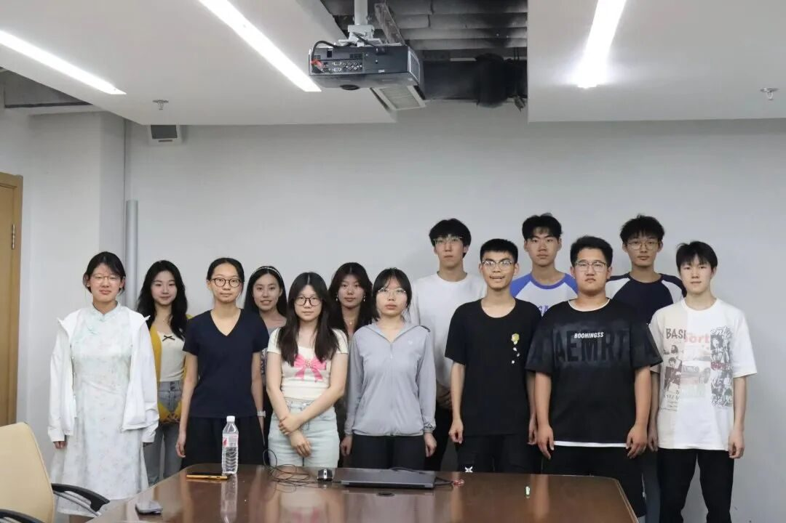
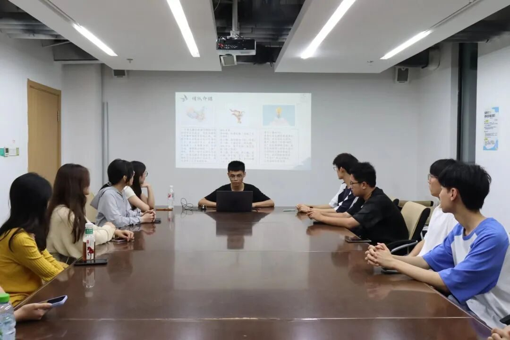
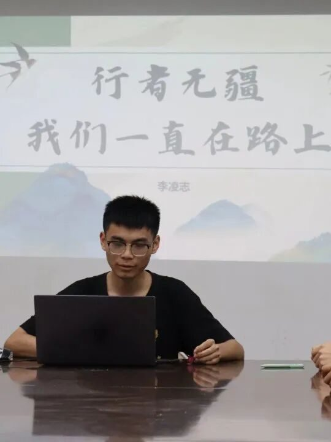

津门遗韵待行寻，行者聚首启新程



为开启“非遗+国际化”实践调研新征程，大连理工大学盘锦校区第十六期“行者无疆”社会实践团于6月20日召开团队成员见面会，队长李凌志围绕团队介绍、实践规划、成员分工和答疑解惑四部分展开介绍，为此次实践活动筑牢根基。
回溯征程承底蕴，锚定津门启新章
见面会上，队长首先对“行者无疆”实践团的历史沿革进行了介绍。自2016年成立以来，实践团始终致力于继承与弘扬中国优秀传统文化，凝聚起一支兼具凝聚力、行动力与调研能力的团队，在盘锦校区乃至社会各界收获广泛认可，揽获众多实践奖项。本期实践团再度集结，将目光投向国际化大都市天津，聚焦“非遗+国际化”主题，探寻传统文化在现代国际语境下的传承与发展路径。
左右滑动查看更多精彩瞬间~
随后，队长详细介绍了此次天津之行的实践规划。实践团将深入天津的街头巷尾、文化遗迹，挖掘当地非遗项目的独特魅力，了解其在国际化进程中的创新与挑战。在成员分工安排中，队长依据前期面试情况，明确了每位队员的具体工作，确保实践活动高效有序开展。团队成员也纷纷提出疑问，队长耐心解答，让大家对实践任务与目标有了清晰而深刻的认识。
津沽觅遗彰古韵，行者启航展新晖

津沽踏迹寻遗韵，行者扬帆启新程。展望即将开启的天津实践之旅，“行者无疆”实践团充满期待。此次实践不仅是对天津非遗现状的深度调研，更是一次对“行者+”合作模式的探索，团队将以此为契机，迈向更高发展台阶，让传统文化在新时代绽放出更加绚丽的光彩，也让更多人感受到非遗文化与国际化碰撞的独特魅力。
行者无疆
来源 | 行者无疆实践团
文字 | 史子鸣
图片 | 行者无疆实践团
编辑 | 刘辰锡
审核 | 李凌志 杩健辉 张瑶琪
责编 | 邹靓靓 周 亮